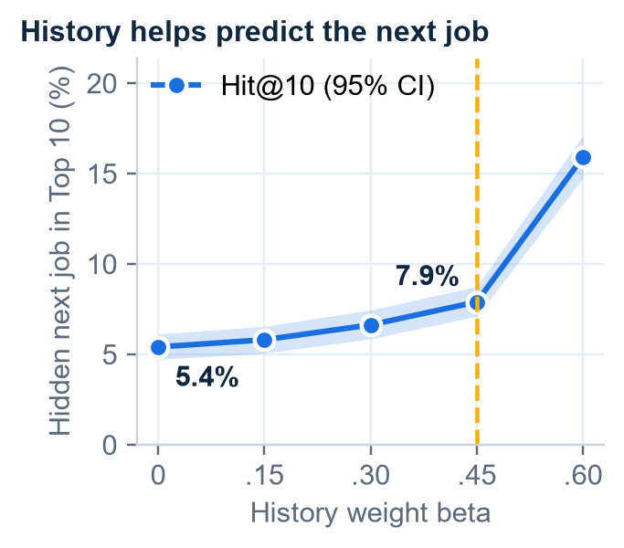
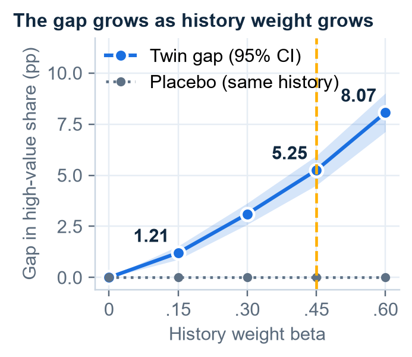
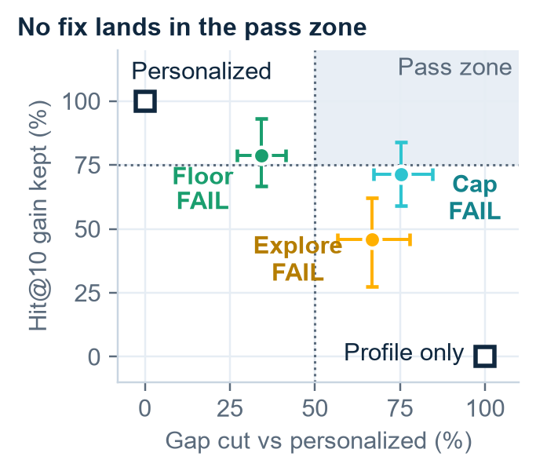
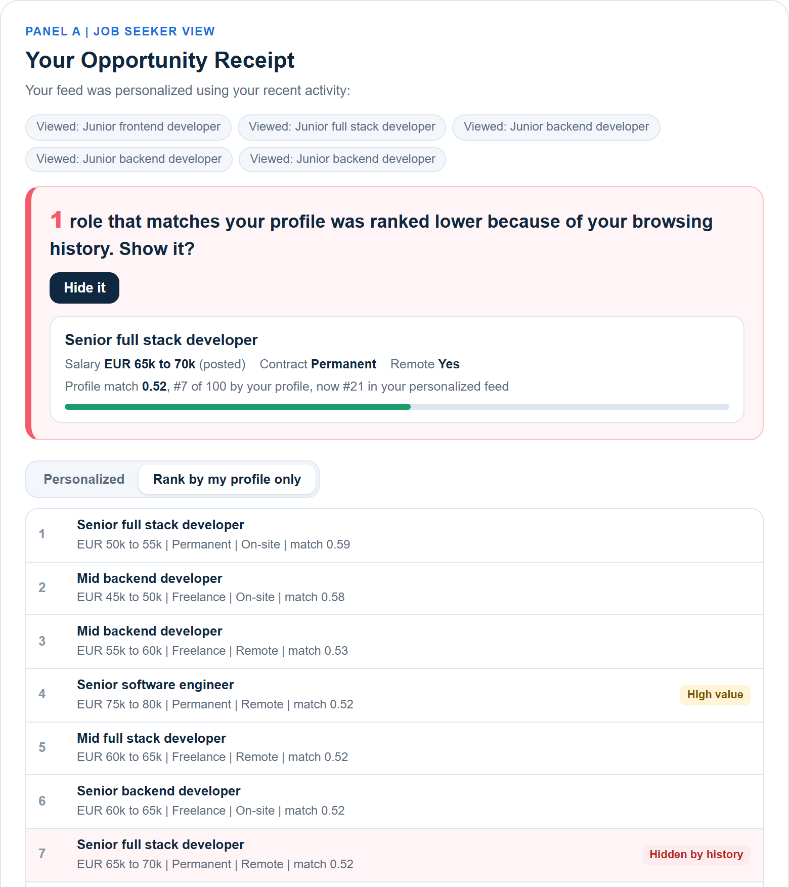
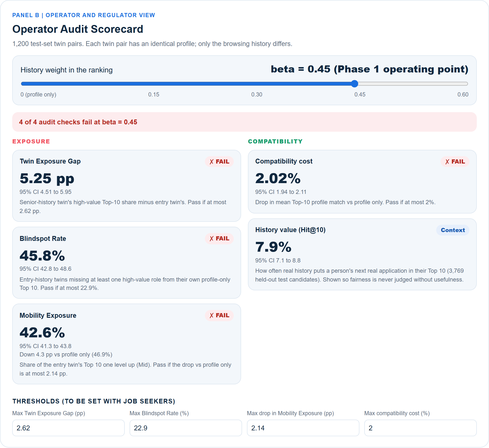

Ontario regulates the screen. Nobody audits the feed.
Phase 1 finding, now replicated
Phase 1 gap
Phase 2, new test-set candidates
Same profile, different history. Twins with a senior-oriented history see more high-value roles in their Top {{topk}} than twins with an entry-level history. Phase 2 test set: 95% CI {{teg_lo}} to {{teg_hi}} pp. Identical-history placebo: {{plc}} pp.
Re-implemented pipeline reproduces {{p1_rebuild}} pp, inside the Phase 1 95% CI ({{p1_lo}} to {{p1_hi}}).
The policy gap
History helps
Hit@10 on real held-out histories. Personalization has real value (pre-registered H1 passes).
But it hides matches
of entry-history twins lose at least one high-value role their own profile would have shown.
Easy fixes fall short
tested fixes pass all pre-registered tests on held-out data. We report every failure.
So we built the audit
A twin test with three exposure metrics and a compatibility guard, shown to users and to operators.
Clone
Copy one real candidate profile into two digital twins.
Vary history only
Twin A browsed senior roles. Twin B browsed entry-level roles. Nothing else changes.
Rank
Same ranker, same pool of the {{pool}} jobs that best match the profile.
Compare
Check each twin's feed against its own "profile only" Top {{topk}}.
Score
Three exposure metrics plus a compatibility guard, each with a 95% CI and a pass or fail threshold.
Twin Exposure Gap
How much history alone shifts who sees the best roles.
Blindspot Rate
Missed = a high-value job in my own profile-only Top {{topk}} that my personalized feed dropped.
Mobility Exposure
Does the feed still show a next career step?
Compatibility Guard
Stops anyone "fixing" fairness by showing bad matches.
High value = top {{hv_share}}% of the matched pool on a score of {{w_sal}}% salary percentile + {{w_perm}}% permanent contract + {{w_rem}}% remote option (Phase 1 definition).
Why these metrics fit
Twins hold the profile, the job pool and the ranker constant, so any gap is caused by history. A placebo with identical histories must show no gap. Every exposure metric sits next to a compatibility cost, so a platform cannot look fair by showing worse matches.
Who runs it
Platforms run it internally on their own profiles. External auditors and regulators use synthetic or consented profiles plus ranker access.
What exists vs what's new
Ontario disclosure (2026) [1, 2]
Covers AI screening after someone applies, not the feed that decides what they see.
EU DSA Article 38 [6]
Very large platforms must offer at least one recommender option not based on profiling: an on/off switch that measures no harm. Commentators call for more graded, meaningful controls [7].
Researcher audits
Usually one-off external studies, not a repeatable compliance test.
Ours
A repeatable twin test, a compatibility guard so fairness can't be bought with bad matches, and a receipt naming the exact job a person missed. It keeps personalization's measured value (+{{h1}} pp Hit@10) instead of switching it off.
Our "profile only" toggle still ranks on profile data, which may count as profiling under GDPR Art. 4(4). We do not claim it satisfies DSA Article 38.
Twin Exposure Gap
95% CI {{teg_lo}} to {{teg_hi}}. Senior-history twins: {{hvA}}% high-value roles in Top {{topk}}; entry-history twins: {{hvB}}%.
Blindspot Rate
of entry-history twins lose at least one high-value match (CI {{bl_lo}} to {{bl_hi}}). Mean {{miss_mean}} per twin.
Placebo
Identical histories give no gap. Paired permutation test on the real gap: p {{perm_p}}.
History helps (H1 passes)
Hit@10 on real held-out histories: {{hit0}}% with profile only, {{hit45}}% personalized (CI {{h1_lo}} to {{h1_hi}}; bar was ≥ {{thr_h1}} pp).

Personalization is useful, so a fix must keep most of this value. Dashed line: Phase 1 setting, beta {{beta}}.

Gap holds at {{rob_posted}} pp (CI {{rob_posted_lo}} to {{rob_posted_hi}}) using only posted salaries ({{imp_pool}}% of matched-pool salaries were LLM-imputed), and at {{rob_excl}} pp if imputed jobs cannot count as high-value. Salary-only value: {{rob_sal}} pp; equal weights: {{rob_eq}} pp.

Each fix at its tune-set setting, scored on the test set (95% CIs). All three stay under the {{thr_cc}}% compatibility guard (table).
| Fix (setting tuned on tune set) | Gap cut ≥ {{thr_teg}}% | Compat. cost ≤ {{thr_cc}}% | Hit@10 kept ≥ {{thr_hit}}% | Verdict |
|---|---|---|---|---|
| History cap (beta {{cap_param}} for high-value roles) | {{cap_red}}% | {{cap_cc}}% | {{cap_hit}}% | FAIL |
| Profile floor (tau {{floor_param}}) | {{floor_red}}% | {{floor_cc}}% | {{floor_hit}}% | FAIL |
| Exploration slots (k = {{expl_param}}) | {{expl_red}}% | {{expl_cc}}% | {{expl_hit}}% | FAIL |
Pre-registered decision
No fix passes all three tests, so the recommendation is the Audit plus a "Rank by my profile only" control. The history cap came closest: it kept {{cap_hit_tune}}% of the gain on the tune set but {{cap_hit}}% on test (CI {{cap_hit_lo}} to {{cap_hit_hi}}). Personalization itself costs {{cc45}}% compatibility, just over the guard.

What the job seeker sees
A plain alert: {{r_med}} role that matches their profile was pushed down by browsing history.
The missed role itself: {{r_title}}, {{r_band}}, #{{r_prank}} by profile but #{{r_frank}} in the feed.
One toggle: "Rank by my profile only".

What the operator sees
Exposure and compatibility side by side, each with a 95% CI and a pass or fail badge.
A history-weight slider replays the audit at five settings.
Editable thresholds, ready to set with job seekers.
In the prototype, every tested fix is listed with its pre-registered verdict.
How the example was chosen: a real entry-history twin from the test set, picked by a fixed rule. {{r_nblind}} of {{r_ntwins}} entry-history twins missed at least one role; the median among them is {{r_med}}. We show the first twin in sample order with that count. Titles come from the dataset's job category and seniority fields.
"Blindspot Audited" badge
Job boards run the twin test on their own ranker each quarter and publish the Scorecard. It is a batch job: no new data and no user tracking. A full audit takes at most {{rt_sec}} seconds on a laptop ({{rt_cpu}}, {{rt_ram}} GB RAM; slowest of {{rt_runs}} fresh runs).
An audit clause in public contracts
Owner: Ontario's Ministry of Labour, Immigration, Training and Skills Development, which runs Employment Ontario [8]. The clause:
"The vendor shall run the Opportunity Blindspot twin test on its ranking system each quarter and publish the Audit Scorecard. Contract renewal requires every check to pass the thresholds agreed with the contracting authority."
Disclosure for the feed
Ontario already makes employers disclose AI screening and requires job posting platforms to take fraud reports [1]. Extend that logic from screening to distribution: disclose personalization and offer a profile-only view.
Co-design comes first
The Scorecard thresholds are editable. Today's defaults apply our pre-registered rule of halving each harm ({{d_teg}} pp gap, {{d_bl}}% blindspot rate, {{d_mob}} pp mobility drop) plus the {{thr_cc}}% compatibility guard. The first rollout step is setting them with job seekers, starting with entry-level and career-changing users. No pilot has run yet.
Limits and trade-offs
A simulation, not an audit of a proprietary platform. Treatment histories are synthetic ({{hist_k}} jobs each). Compatibility is a text-similarity proxy, not verified eligibility. "High value" is an operational definition and seniority is LLM-inferred. We do not use or analyse the dataset's LLM-inferred demographic fields, so we make no claim about any group. Phase 1 code was re-implemented from its method. Next: test the newcomer scenario with consented real histories, and apply the same twin test to housing and education ads.
Data box
Source
JTH v1.1: {{n_cand}} candidates, {{n_jobs}} vacancies, {{n_proc}} application processes. Zenodo record, CC BY-NC 4.0.
Represents / does not
Real profiles, vacancies and dated application funnels from a European job platform. Not what any live feed showed, not Canada, not demographic groups.
Exposure proxy
A job counts as seen if it appears in the Top {{topk}} of the ranked feed.
Limitations
Many fields are missing (missing salaries use an LLM estimate), several fields are LLM-inferred, dates carry noise, and roles skew to tech.
Why the metrics fit
Twins isolate history; a placebo checks the test; every exposure metric is paired with a compatibility cost.
Team
Princy Patel, policy and research: policy and source review, audit framework design, rollout plan and writing.
Sahil Patel, data and engineering: data pipeline, twin experiments and statistics, prototype and verification.